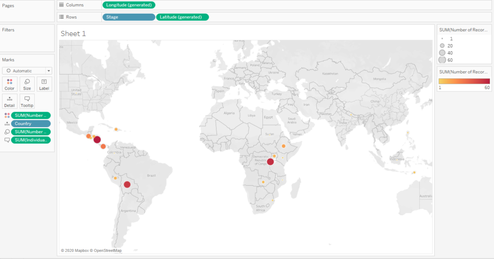

One of the cool things about data visualizations is that they can be interactive to the viewer. Anything from tool tip text to specific things that happen when you hover or click on certain aspects of a visualization can create a truly immersive experience for the viewer. This puts the viewer in control of the action instead of just passively looking at a picture.
As I listened to this episode of Data Viz Today on how to fill your data viz toolbox, I realized that there are different goals you can have for creating data visualizations. One of those goals is if you want your viewer to be able to ask and answer their own questions through exploring your data visualization. If so, we would need to be able to build in functionality to an interactive data visualization to allow just that.
How can this be done? Within Tableau, there is a feature called Actions.
What is an Action?
An Action basically tells a data visualization to do something specific based on what the viewer of the visualization does while viewing it. There are five different kinds of Actions that allow for a lot of customization.
Filter Actions – Whatever the viewer clicks on/hovers over in one visualization, it will then filter within another visualization
Highlight Action – Whatever the viewer clicks on/hovers over in one visualization, it will then highlight the selection within another visualization
URL Action – This triggers a link to a website, YouTube video, picture, or email from the dashboard
Go to Sheet Action – This allows the viewer to jump from one dashboard to another.
Set Action – This basically allows the viewer to change the values in a set so a visualization is updated on the fly, such as coloring things that weren’t colored before.
Little overview demos on each one are showcased on this great YouTube Video here. My focus in this post today is on the Highlight Action as well as the Filter Action.
Keep reading to learn how to harness the power of Actions!
The Context on the Data Set
MakeoverMonday Week 4 did not disappoint in providing background for its data set. This week’s data set covers the impact of an organization called Bridges to Prosperity. What they do is build bridges around the world in isolated communities to give people safe access to education, markets, employment, and health services. Just a single footbridge across an impassable river can impact an entire community.
The goal for my data visualization was to show the impact of a single bridge on average by analyzing the number of people served.
Initial Data Exploration
To start off, I selected a map to plot my data points, but as you can see, the points seem to get lost on the map. My efforts in changing the size and color based on the number of bridges built seem to not matter much at first.

At this point, I decided to make the background map take on a dark theme. This seemed to help the different areas pop out much more.

I then shifted my focus to the tool tips. Recall from my previous posts that the default tool tips seem to show just a bunch of variables and numbers. I like to change these to read like actual sentences.
Figuring out the Impact of a Single Bridge
Looking at overall numbers is great, but I thought it might be neat to zero in on the impact on a much more granular level. I right clicked in the white space under Measures and selected Create Calculated Field.
Within this new Calculated Field, I created a calculation called “Impact Ratio” to just take the sum of the number of people directly served and divided by the number of records. What that does is tell me how many people on average have been served per bridge in any given situation. The original data set was structured in such a way that it showed each bridge on its own single line. Therefore, this calculation could work when it is placed within the data visualization.
This is actually one of the nice parts I like about Tableau. I love that I can create different calculations while I am working within the worksheet, so I can drag and drop it right away to see its effects on the visualization. I don’t need to create anything special in the data set beforehand.
This time I formatted a different tool tip to read a different insight: the impact of a single bridge.
Now for the fun part. Tableau Actions!
How to Create an Action
As I mentioned earlier, there are five different kind of actions. The kind that I will pick out this time is Highlight Action.
I then specified the following to happen:
If the viewer hovers over something in the Distribution visualization (Source), then it will also highlight in the Impact visualization (Target)
If the viewer hovers over something in the Impact visualization (Source), then it will also highlight in the Distribution visualization (Target)
I specified All Fields and didn’t really spell out anything else for this particular Action. As you can see, there are a lot of different options even within the Action types!
I then decided I wanted to not only highlight what was hovered over. I wanted to filter by that as well.
Similar to the Highlight Action, I specified that I wanted to have something happen with the Distribution visualization when I hovered over it in the Impact visualization.
The Final Results
Here is the result of these two actions. When I hover over a country in the bottom visualization, the top visualization filters actually moves around to that part of the world to show it more clearly.
Additionally, if I hover over the map somewhere, it will simply highlight the country in the bottom visualization. I didn’t use the Filter Action go the opposite way on this one because it would have zoomed way in on just one bar in the bar chart, which wouldn’t really serve much of a purpose.
When nothing is hovered over, this is what the final visualization looks like.
Here is a link to the actual interactive visualization that show the Actions …in action!
Lessons Learned
If I were to revisit this data visualization again, I think I might look into the actual bridges themselves to provide more specific insights on the impact of a single bridge. Sure, there could be X number of bridges in one country, but they aren’t all created the same. Some are longer or shorter. Some could individually serve more than others.
Also, I’d like to look into more on which bridges were completed versus under construction and confirmed. My data visualizations here only looked at the completed bridges. Maybe there could be some insights on where the organization could build next.
Finally, I think I would revisit the colors. The decision was largely based on the “dark theme” I specified for the map background. Maybe I could have gone with more green in the gradient to go along with the organization’s color scheme.
I believe that constantly reiterating and reflecting on our work will help us produce better work as we go forward. I encourage you to do that in all your endeavors as well!